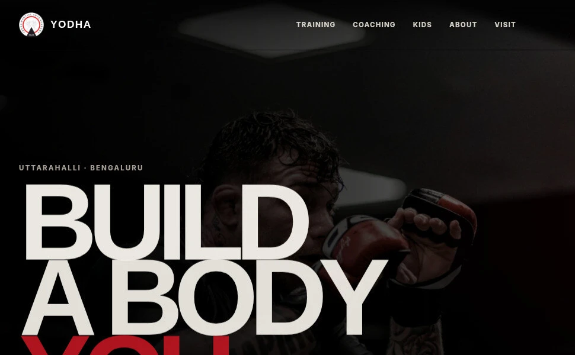

Project study / Published website demo
Yodha.
Find your discipline.
This martial-arts academy website demo explores a practical question: how can people with different training goals find relevant information and a useful contact route?

01 / Context and contribution
Different goals.
A relevant starting point.
An adult exploring combat sport, a parent looking for children’s classes and someone interested in strength training will not all arrive with the same question. The website needs to make its training routes understandable.
My contribution covered website direction and AI-assisted design and development. The project presents programme information and contextual contact paths in a responsive academy website.
02 / Design decisions
Help a visitor
find their route.
- Make the offer legible
- Bring the training programmes into a concise story, then provide routes to the information relevant to each visitor’s goal.
- Keep contact close
- Use contextual contact paths and a quick-contact area so visitors can find a next step after exploring the programme information.
- Consider the phone journey
- Structure content and navigation for smaller screens. Physical-device checks and real user feedback remain part of evaluating the experience.
- Keep practical details within reach
- Provide routes to location and contact information alongside the training pages, so visitors can check how to take the next step.
03 / What you can inspect
From programme
to next step.
The linked website provides programme information, supporting pages and contact routes. Its public repository contains the source and publishing notes.
This is a published portfolio demo. Academy commissioning and approval have not been established, and no traffic, enquiry or enrolment results have been verified.
04 / The next validation step
Ask whether people
can find what matters.
A useful next test is to give willing participants different training goals and observe whether they find the appropriate programme and contact route on a phone.
Record completion, confusion and missing information so the next revision responds to what visitors actually need.
05 / A related project
Make your offer
easier to understand.
If your business serves different audiences, let’s discuss how its website can guide each person toward relevant information.